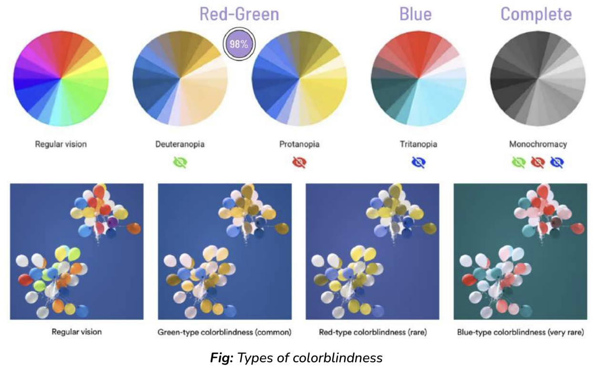
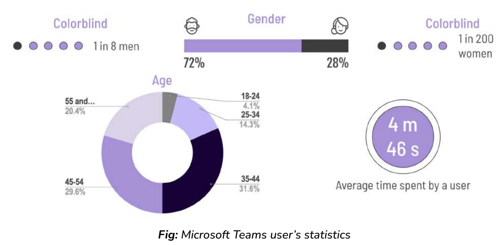
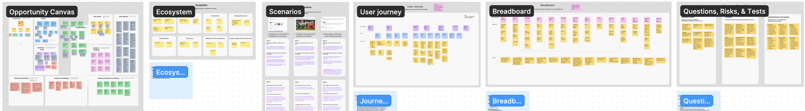
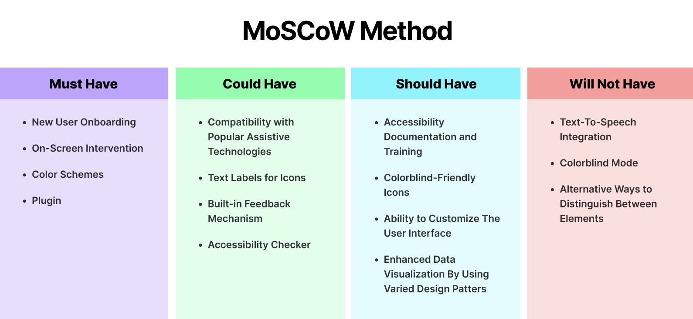
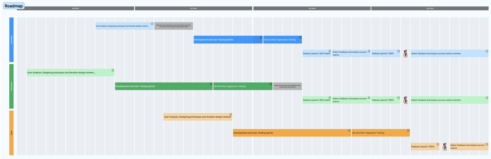
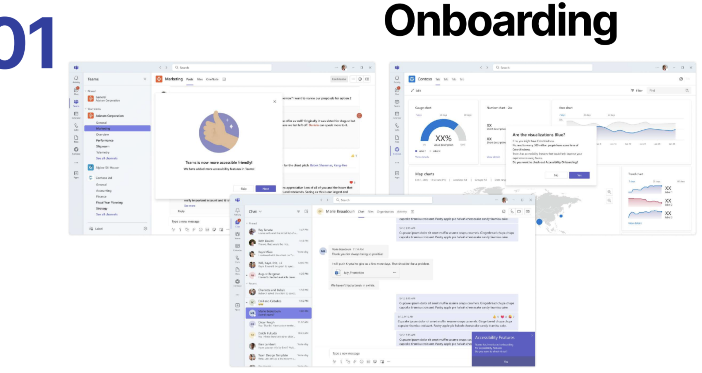
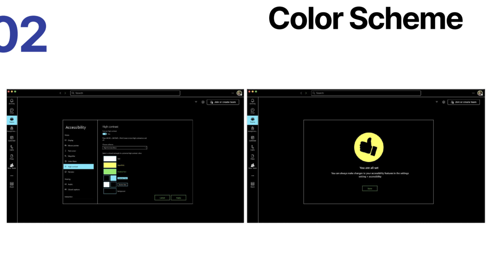
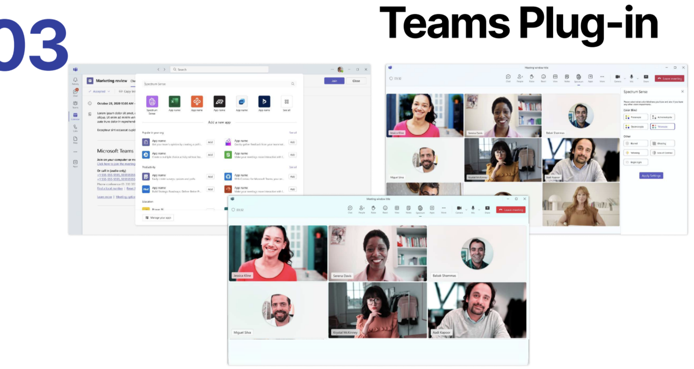

Featured - Product Management Empurple Enablers
Improving Accessibility for Color-blind users while using Microsoft Teams
Winning team among 10 teams working on similar Product Management projects, awarded by stakeholders from Microsoft.
Project brief:Improving the Accessibility of Microsoft Products Ask: Microsoft has a strong stance on accessibility and inclusivity- choose one Microsoft product and make it more accessible to users with disabilities. Focusing on a core user group, develop accessibility features for a product in Microsoft’s product portfolio. Explore different areas and learn about a group of users that often get left behind. Your chosen user group must be currently underserved by the offerings in your chosen area. The features that you build should directly address the real problems currently experienced by your users. The solutions must fit within the Microsoft ecosystem, the business and product priorities, and the industry space. Put simply, help make Microsoft products more inclusive
Product and Usergroup:We started the project by finalizing the Microsoft Product and the user group that we wanted to focus on. So, we decided to choose Microsoft Teams, and the underserved community of color-blind users Why Teams and Why Color Blindness? Microsoft Teams is a popular collaboration platform used by millions worldwide. However, there are still opportunities to enhance accessibility, particularly for those with vision impairments like color blindness. Colorblind individuals have difficulty distinguishing between certain colors, and this can affect their experience with software and applications that rely heavily on color-coded information or interfaces. Around 10% of Teams' 280 million users, or 28 million people, are colorblind. The problems they face include lack of customization, low contrast, inaccessible data visualizations, and reliance on color cues. Now how did we come up with this number, since we didn't have direct access to Microsoft Teams data, this was acheived via the Discovery phase
Discovery:In this phase, we studied the product i.e. Teams, and our user group i.e. color-blind users in much detail. Few statistics that we found were: - The estimated number of people with color blindness is around 300 million worldwide.

- Worldwide Users of Microsoft Teams: 280 Million - 1 in 8 men and 1 in 200 women are colorblind - We also found that 72% of Teams users are men and the rest 28% are women. - So by doing some calculations, we found out: Estimated Color-Blind Users in Microsoft Teams: 28 million (10%)

The next step was to find out the problems that color-blind users face, now this was a challenge since we didn't have access to Microsoft's historical data and it was even difficult to find color-blind people who use Teams. So we had to get creative and figure out different ways to correctly identify these problems. We simulated colorblindness using a browser plugin and tried to use Microsoft Teams as a colorblind user. The below video is a demonstration of this.
We even researched various Facebook pages, Reddit communities, and articles related to color-blindness. We finally found the major problems: - No Onboarding Workflow for Accessibility - Issues With High-Contrast Mode - Color-coded Information That Can Be Missed - Issues with Visualization
Proposed Solutions:Once the problems were found, we came up with solutions to fix those problems. We started this process by using a Framing framework as below:

Now, we have a lot of ideas that we could work on, but we cannot start with all of them at once. So, the next step for us was prioritization
Prioritization and Scoping:We considered different models like RICE and MoSCoW, but we went ahead with MoSCoW to scope out features for our MVP

Once our Must Haves were finalized for the MVP, we built a roadmap for their implementation.

Since we didn't have the resources to implement these features we implemented the designs of our solutions to give a vision of our ideas



Finally, to end the project, we defined metrics of success and failures, along with a combination of 4-5 feature indicators for each solution. To conclude, throughout the project, we followed a structured approach divided into key stages, successfully addressed the core user problems, and aligned our solutions with both the business and user needs.